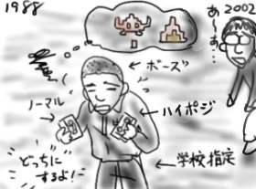

今日は部署の飲み会でした。2次会では、同じチームの人が説教モードに入りましたが、僕を含めた若手4人衆の中、僕だけがその場の説教対象ではなく、説教待ち行列に入れられたのはほっと胸を撫で下ろしていいのか、不安を感じればいいのか、いまいち不明です(挨拶)。いつ取り出されますか。
しかし、会社へは徒歩で歩いて行ける範囲に住む僕のこと、飲み会場所が会社のある市内で開催された時点で地形効果によるプラス修正なので、午前様とは言え余裕の凱旋を果たしました(発想がダメ)。
今日の飲み会で気付いたことと言えば、部署内の僕のポジションがいつの間にか「無邪気な顔をして計算高い毒を吐く」というキャラに定着しつつあり、それはやばいなぁと思いました。助けて、おでんマン！
ハローワークに行けば？
△
／ ●＼
□
/ ＼
正直ガッカリしました。ありがとう＞おでんマン
世界に組み込まれて生まれ変わったなら、雑誌のグラビアの必要なんだか不要なんだかよく分からないポエムを書く職業につきたいなぁ。「どんなに光を集めても 君の瞳には勝てないよ」とか。「夕日に頬を赤く染めて なんだか照れくさいよ… 二人で見つめ合って笑ったね」みたいな。毒にも薬にもならないような。読者の目に留まるのはグラビアアイドルの巨乳なので、あくまで添え物の。そんなのばっかり書き続けて老いて行くんです。何年書き続けても慣れなくて、ついつい書き終えたら照れくさくなって小脇でお座りして待つ愛犬のゴールデンリトリーバーの頭撫でたりするんです(挨拶)。
川沿いのバラックで。(ミズグチくんは実社会にかなり微妙に追い詰められています)
最近の帰宅してからのお楽しみは、往年のアーケードゲーム音楽をmp3ストリーミングで24時間放送している番組を試聴することです。ツボを押さえた選曲に、滂沱の涙、バランガバランガ涙も風になります。今はダライアスのラストボスだよ！名曲！中高生の時に友人と持ち回って集めたゲームミュージックのアーカイブはほとんどテープなので今や再生するハードを持ちません。懐かしいなぁ。少ないおこづかいで、ノーマルテープを買うか、ハイポジを買うか、店頭で相当悩んだよな。メタルテープには手が届かなかったよね。
そんなノスタルジィな気分なここ数日なんですが、会社の生協でたまたま「マイコンBASICマガジン」なんて見かけたのでめくってみたら、相変わらず表３のあたりに日本ファルコムのイースの広告が載っていたりして昔('88年あたり)と全く変わってないじゃん！どういうこと！？
こうやってゆっくり時代は巻き戻って行くんだなぁ。

そんなマイコン8bit少年を夢見つつも、ついぞ買い与えてもらえなかったファミコン、マイコン、パソコン…etc。すなわち無いコン族だった僕ですが、それを思い返すとポエムよりはソースコード書いてた方がいいよね。
つまり、一言で言うと「ゲーム音楽ありがとう」
しかし、「妖怪道中記」は「千のナイフ」すぎです。
遅めに帰宅しても、健康を気づかって野菜炒めを作ったり、「グッド群馬の"かきな"」という謎の菜っ葉を茹でる僕、偉い！(挨拶)
で、「かきな」って何！？100円で大量に売ってたからなんとなく買いましたけど。
しかし、気が付くと小さい頃は聞いたこともない菜っ葉とか、聞いたこともない魚とかがスーパーで売っているようになりましたね。これは一体なにごとですか。おひょう！
僕らは遺伝子によって設計されていると言うが、それならば遺伝子を解釈実行しているのは「世界」の側なんじゃないのか。遺伝子は「世界」が演算を行う上で必要とするコード、僕らの存在は演算上のある状態にすぎないんじゃないのか。演算過程を再び遺伝子に書き戻し、それを新たな入力としながら「世界」は自己改変を続けているんじゃないか。だから、僕らのまわりの生物は演算過程を書き戻され、ゆっくりとその姿を変容させているのではないか。聞いたこともない生物が顕われたのと引き換えに姿を消した生物はないか。あなたは、本当に昨日のあなたですか。
とかだったら世の中捨てたもんじゃないのになぁ。どうかなぁ。預かり知らない所でゆっくりと歯車が回り続けているという妄想はなんでこんなに甘美ですかね。たかだか「かきな」で。
「かきな」は普通におひたしにしました。普通に美味しかったです。
昨日のデジカメ写真は夜の写真ばっかりだったわけですが、もちろん日没までに充電が間に合わなかったのが理由です。で、明日こそはデジカメをかまえて公園とかに出かけて、息吹き始めた命の萌芽をバッチリと納めてやるぞ！(普段まったく公園なんかに行かない癖に)と決意したのです。
昼過ぎに起きだして掃除やら洗濯やら。やぁ今日はよい天気で絶好の撮影日和だ。風が強くて洗濯物が飛ばされるけどね(一階まで拾いに行く羽目に)。
それからwebでいくつか調べものやダウンロードなどをしてたら、予約を入れておいた散髪の時間です。あれれ？予約は午後5時に入れておいたはずなんですが！？心で涙を流しながら完全に傾いている夕日を背に美容室へ向かいます。
webは怖いなぁ。。
予約通り美容室についたら、僕よりかなり前のお客さんのセットが押してる様子で予約待ちの人が数人ほどいて、結局30分くらい待ちました。しかし、意地で持って来たデジカメ以外は何も持たずに出たわけですから、かなりの手持ち無沙汰です。雑誌コーナーを覗いてみるも「ヘアカタログ」とかそんなんばっかりで大変困った状態です。予約待ちの人はみんな女性ですから結構熱心にヘアカタログなんかを見ていますけど、もちろん女性モデルの写真ばかりですから僕にとってはカタログではありませんので価値もあんまりありません(むしろカタログとして眺めるのは社会的に問題があります)。結局携帯に届いたメールなどを何回も眺める羽目に。こういう何もしていない時間が苦痛で仕方ないのは文明病でしょうか？
そして携帯メールにもいい加減飽きて、結局「ヘアカタログ」に手を延ばしてしまいましたが、予想通り野中のばらの４コマ漫画以外はあんまり読むところもなかったです。たとえ漫画家が髪が伸びたから髪を切りに行くという他愛のない話が書いてあっても、漫画だったら読めちゃうよね。しかしこの手の雑誌には理容の専門学校生の紹介みたいなコーナーもあって結構びっくりします。情報系で言ったら、ソフトウェアのカタログに、情報系の専門学校生の紹介コーナーがあるようなもんで、そんなの月刊情報処理(資格専門誌)みたいな物にすら載っていませんよ(なんでも情報系で換算しようとするのはやめましょう)。その代わり、SE関係の雑誌には、年収1000万プレーヤなんかが出て来て鼻息荒く「みんなもこう成ろう」みたいな焚き付け方をするので、どちらが健全でしょうかね。
ようやく順番が回って来たので当たり障りのない話題で場を持たせます。クビキを解かれた髪がはらはらと宙を舞います。
頭髪のカットが終わった時にはすでに辺りはどっぷり真っ暗。結局、息吹き始めた命の萌芽を写真に納めることは出来ず、僕の頭で息吹いている頭髪をカットしたり、僕の心で息吹き始めた写真への興味を摘み取ったり、そんな1日でした。
意地で美容室へ行く前に一枚だけ撮った写真は上記です。白黒だって撮れるんだぜ！
休日なので秋葉原へ(またかよ)。
西原さんに背中を押してもらいながら！焚き付けられながら、ついに(つーいーにー)！ぼくも(ぼーくーもー)！デジカメを(デージカーメをー)！しつこいので止めます。買いました！Pentax Optio330という奴を。デジカメなんて買うの５年ぶりくらいです。うわ、今計算してびびりました。年も取るはずです。最近のはUSBでマスストレージクラスというのに対応していれば、MacOSX環境でデジカメを繋いで電源を入れればボリュームとしてマウントされ、iPhotoが自動的に立ち上がり、転送もラクチン、おまけに転送後にデジカメ側の画像は消去してくれるという、なんとも便利な世の中になったものです。iPhoto上のカメラ名もちゃんと正しくOptio330になってますよ。
デジカメも久しぶりなんで、やたら嬉しくてバシャバシャといくつか撮ってみました。言うならば自慢です(しょぼい)。
- ぼくのじまんのPowerBookG4をカッコヨク→(写真13k bytes)
- ぼくのじまんのPowerBookG4で使ってるじまんのマウス→(写真5k bytes)
- 夜景をなんだかよく分からない感じに→(写真6k bytes)
- キーボードを換装したPowerBookDuo→(写真13k bytes)
- タイトル：ぼくのじてんしゃはゆめうつつ→(写真24k bytes)
注）写真にたくなる号は含まれません
もちろん縮小してます。
3/11日記に買って来たシャンプーを詰め替えて身だしなみに気を使います。嘘、本当はカラスの行水でパッパッサッサッと洗浄です。ただし、湯舟では小説類や雑誌類を眺め倒します。お風呂読書歴もだてに10年選手じゃないですよ。読む小説も、富士見ファンタジア文庫やスニーカー文庫から、ハヤカワ文庫や電撃文庫や徳間デュアル文庫へ！(まったく進化してません)。読む雑誌も、ドラゴンマガジンやコミックコンプからMacPowerやMobile PressやUnix MagazineやアルカディアやStrangeDaysあたりへ！(あんまり進化してません、というか趣味が計算機方向へ末広がりして悪化。もっとも後ろの方の雑誌は滅多に買いませんが)。
そんなわけで、風呂と言っても洗浄方面は無頓着なんですが、詰め替えたシャンプーはなんか泡立ちがイマイチ。「なんだか泡の立たないシャンプーだな…」と思い込んで丸二日、それがリンスであったことに全く気付きませんでした。三日目になって「もしや…」とようやく思い当たり、ゴミ箱から詰め替えパックのパッケージを発掘して、そこに燦然と輝く「ダメージケアリンス」の文字を見た時の衝撃と言ったら言葉では言い表わせません。
リンスを使って得たダメージ(主に心の)をケアするのに、このダメージケアリンスは役に立つでしょうか？どうか？
久しぶりにBOOKOFF荒らしを慣行し、いしいひさいち「女には向かない職業」1,2巻(東京創元社)を100円で。「日本人のひるめし」と「ゾウの時間ネズミの時間」(共に中公新書)をそれぞれ100円と350円で購入。BOOKOFFは本の価値をまるっきり分かってないので、バカだなぁという思いで搾取するのが正しいです。
今日は会社帰りにコンビニに寄ったので、3/8日記で書いたように、もう一個くらい買ってもいいかな、と『水木しげる妖怪事典』を購入。帰り道で開封してみると(子供なので家まで我慢できません)、これは！この感触は！ついにサラリーマン山田を引き当てたか！やりました！やーまだぁー！(植木等ボイスで)
クリアパーツ仕様のサラリーマン山田だ！！ガビーン！
…激しくいらないや。
サラリーマン山田の脳内に気泡が浮いてるを発見し、激しく動揺。彼は足りないね。
帰宅していきなりIRC(要はチャット)クライアントを起動するのが日課です。終わってるなぁ。
しかし繋いだはいいけど、ちっとも会話が流れてこない(伏線)。おかしいなぁ、まぁいいやぁと思いつつ飯をかきこみ、コンビニまで。花粉症１年生の僕としてはティシューペーパーが切れたのは致命的なのです。しかし、１年生だけあって症状は軽微で、起床後にズバーと鼻水を放出する以外は今のところいたって平穏です。アルミサッシを閉め切った室内でズバーのくせに、出勤しようと外に出るとほとんど鼻水が止まってしまうというのはもしかしたら花粉症とは違うのかも知れません。全く不可解です。僕の寝室に誰か変な粉を注入してませんか、念力とかで。
などと楽しい妄想をしながらコンビニ到着。ティシューと電話代の支払いをすませて帰宅。施錠していると部屋で電話が鳴り響きます。何事かと床を蹴り、スケーティングしながら(似非フローリングなので靴下履いていれば可能ですよ？)受話器キャッチ&トーク！
「何回電話をかけても、『お客さまの都合により云々』と言われて繋がらないから死んでいると思った」とは何事か！この通りピンピンとして…ってええ！？
どうやらIRCに繋いだ瞬間に料金未払いで電話回線使用不能に陥っていたようです。道理で誰もしゃべってないと思ったよ(伏線回収)！
しかし、部屋で行き倒れて死んだら、NTTが「お客さまの都合により云々」とアナウンスしてくれるのは便利だなぁ。してくれません！
なんだか異様にだるいので早めに帰って来てグーグーと。数時間後に起きだして、麻婆豆腐を作成。豆腐は半額セール品で、CookDoで手軽に本格中華です。
ウマー！(゜Д゜)。バーミヤンの麻婆豆腐より辛くてうまいです(比較がイマイチです)。ビバ！CookDo！というか、辛い食べ物はおしなべて善ですよね。辛！ウマ！
…数時間後。辛味でまだ胸のあたりが熱いのですが、ちょっと利き目が強すぎやしませんでしょうか。後まで残るしっかりとした満足感？そろそろ再び眠りにつきたいんですが、どうでしょうか。まだですか？＞CookDo
最近、IRC(要はチャット)に平岩が復活気味です。どうせこのログはどこにも公開されずに埋もれていくはずなのでちょっぴりこっそり公開です。
Hiraiwa> △
Hiraiwa>＜●＞
Hiraiwa> ■
Hiraiwa>／ ＼
Hiraiwa> おでんマンさんじょう！
mizuguTi< 平岩さん、
mizuguTi< それ、3体出してくれないとチェーンが継続できません
Hiraiwa> 斑鳩すぎです＞ミズグチ
Hiraiwa> ▼▽▼▽▼
Hiraiwa> ▼▽▼▽▼
Hiraiwa> ▼▽▼▽▼
Hiraiwa> これで満足ですか
mizuguTi< (´ー｀)
Hiraiwa> ■□■
Hiraiwa> □ □
Hiraiwa> ■ ■
Hiraiwa> □ 俺 □
Hiraiwa> ■ ■
Hiraiwa> □ □
Hiraiwa> ■□■
Hiraiwa> ミズグチの考えたハーレム
mizuguTi< まず白を全部撃つね 。
mizuguTi< 次に力の解放で黒を全滅させる。
mizuguTi< すると早回し*になってもっとたくさん出てくるよ！
mizuguTi< …でも平岩さん、白黒がそれぞれ１体ずつ足りないや…＞ハーレム革命
僕の頭も足りないや。。。
*) 早回し：敵を速く倒すことで出現パターンが早まったり新しい敵機が追加出現すること。斑鳩の場合は早回しによって露骨に敵機が追加出現するのでチェーンをより多く稼げるようになる。
前回のあらすじ：秋葉で遊び惚けていた僕は1分の時間差でスーパーが閉まってしまい、1週間の食料を手に入れ損なってしまった！こうなったらドラゴンボールを集めて神龍に願いをかなえてもらうしか！(かなり今さら感)
今回のつかみ：しかたないのでサティで普通に食料を買いました。意外と半額もたくさんあって助かったよ(一瞬で解決)。いわば仙豆です。
今回のオチ：買ったレタスのほとんどが腐ってた。えーっと、いわばサイバイマン？(超違う)
買ったばかりなのに剥いても剥いても変色したレタスがぐしょぐしょになって張り付いているのは結構トラウマです。
これは昨日の話なんですが、昼間洗濯をしようと思いたったんですが、あいにくと液体アタックが切れていたのでマツモトキヨシまで出かけ、同じく切れかけていたシャンプーと共に買って来たのですよ。それで詰め替えを終了し、洗濯機が順調に回りだしてからふと台所の方へ目をやるとマツモトキヨシのビニール袋がぽつんと置いてあるのが目に入りました。おそるおそる開封するともちろん液体アタックの詰め替えパックと石鹸が。そういえば先週もアタック切れかけているなぁと思って同じく切れかけていた石鹸と一緒に買ったんでした。バッカだなぁ！しばらくアタックは要らないよ、もう食べられないようと考えながら(考えてない上に食べられません)石鹸を洗面台の戸棚へ放り込もうと扉を開けると、石鹸もすでに20個くらい中に。
もうしばらくマツモトキヨシに行くもんか！(逆恨みっぽく聞こえますが、この言明は真です。)
生活臭くて申し訳ない。いわば、生活腐乱圏です。
{kind=link}
{kind=link}
{kind=link}
{kind=link}
{kind=link}